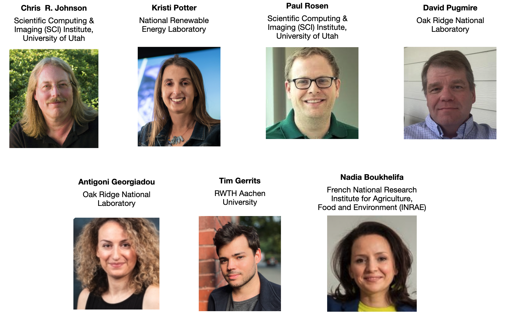

Organization
Workshop Chairs
General Chair
- Tushar M. Athawale
- Oak Ridge National Laboratory
Workshop Co-chairs

Workshop Program Committee
- Tiernan Casey
- Sandia National Laboratories
- Oliver Deussen
- University of Konstanz
- Marina Evers
- University of Siegen
- Steffen Frey
- University of Groningen
- Kiran Gadhave
- Imply Data
- Subhashis Hazarika
- Converging Technologies Lab,
Fujitsu Research of America - Harry Li
- MIT Lincoln Laboratory
- Jixian Li
- Scientific Computing and Imaging Institute,
University of Utah - Jacob Miller
- Technical University of Munich
- Timbwaoga Ouermi
- Scientific Computing and Imaging Institute,
University of Utah - Lace Padilla
- Khoury College of Computer Science,
Northeastern University - Hennes Rave
- University of Münster
- Sudhanshu Sane
- National Renewable Energy Laboratory
- Thomas Schultz
- University of Bonn
- Chaoli Wang
- University of Notre Dame
- Yixuan Wang
- Arizona State Unversity
- Dongping Zhang
- National Renewable Energy Laboratory
- Susanne Zabel
- University Tübingen